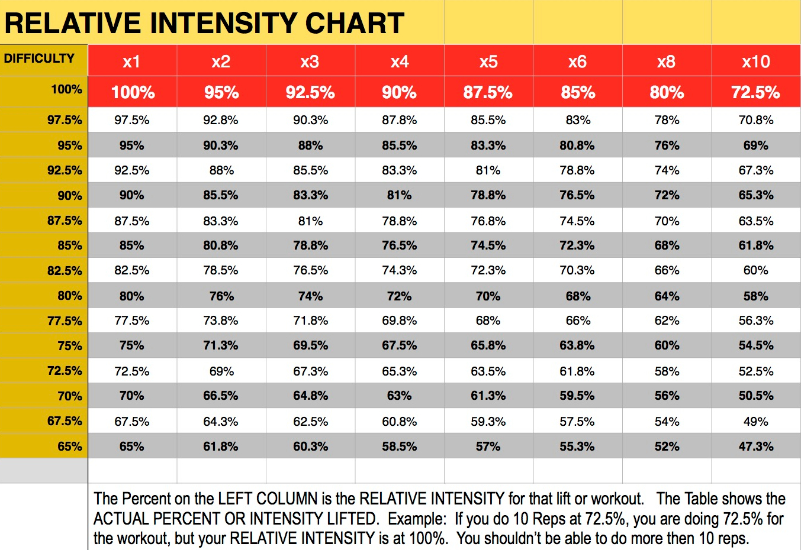

PRINCIPLES OF MUSCLE BUILDING
Before we get started, there’s a couple of points we need to make. First, at the highest level, there are two things that stimulate muscle growth: 1) Resistance training; and 2) an abundance of amino acids in your system.
Resistance training is any deliberate exercise in which your muscles contract against an external force. Weight training is the most common and effective form of resistance training, and while it’s not the only form, it’s what we’ll be referring to throughout the article.
Amino acids are the building blocks of proteins, and proteins are the building blocks of muscle. Having an abundance of amino acids in your system (known as hyperaminoacidaemia), therefore is about your diet.
INTENSITY
Intensity is generally expressed as a percentage of ‘1 repetition maximum’ (1RM) – the maximum amount of weight that can be lifted in a single, complete repetition – and ultimately determines the number of repetitions (‘reps’) that can be performed with a given weight.
Numerous studies examining repetition ranges have found little difference in muscular adaptations in rep ranges as perse as 1 rep to 80 – 100 reps. It seems that the more important component of intensity is actually whether you complete sets to, or very close to (i.e., within 2 reps), momentary muscular failure – the point at which you can’t do another complete repetition with good technique.
VOLUME
Volume is a function of intensity, multiplied by the number of sets and reps completed for each muscle / muscle group per workout. That is, sets x reps x load (intensity).
The best current research indicates that training volume and muscle growth have a ‘dose-response relationship’. That’s a fancy way of saying more sets and reps leads to more muscle building.
If you’re trying to maximize your muscle building efforts, and you have the time and energy, then shoot for 10 sets per muscle group per week. If you’re pressed for time, or you simply don’t have the energy for so much working out, then at least do 4 sets per muscle group per week.
FREQUENCY